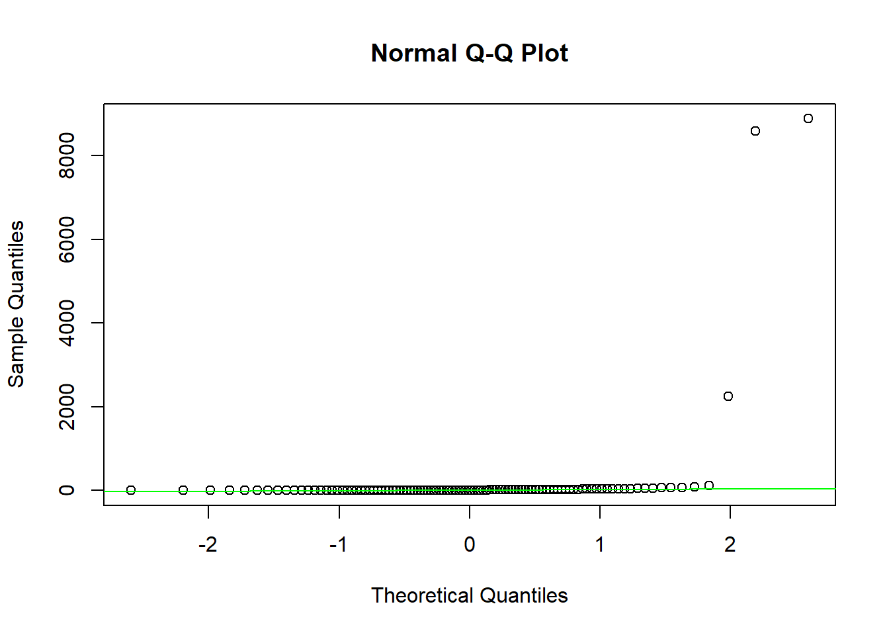

Ecuador plant richness analysis
2022-11-30
Last updated: 2022-12-11
Checks: 7 0
Knit directory: IBIO870_FinalProject/
This reproducible R Markdown analysis was created with workflowr (version 1.7.0). The Checks tab describes the reproducibility checks that were applied when the results were created. The Past versions tab lists the development history.
Great! Since the R Markdown file has been committed to the Git repository, you know the exact version of the code that produced these results.
Great job! The global environment was empty. Objects defined in the global environment can affect the analysis in your R Markdown file in unknown ways. For reproduciblity it’s best to always run the code in an empty environment.
The command set.seed(20221207) was run prior to running
the code in the R Markdown file. Setting a seed ensures that any results
that rely on randomness, e.g. subsampling or permutations, are
reproducible.
Great job! Recording the operating system, R version, and package versions is critical for reproducibility.
Nice! There were no cached chunks for this analysis, so you can be confident that you successfully produced the results during this run.
Great job! Using relative paths to the files within your workflowr project makes it easier to run your code on other machines.
Great! You are using Git for version control. Tracking code development and connecting the code version to the results is critical for reproducibility.
The results in this page were generated with repository version 3877b2e. See the Past versions tab to see a history of the changes made to the R Markdown and HTML files.
Note that you need to be careful to ensure that all relevant files for
the analysis have been committed to Git prior to generating the results
(you can use wflow_publish or
wflow_git_commit). workflowr only checks the R Markdown
file, but you know if there are other scripts or data files that it
depends on. Below is the status of the Git repository when the results
were generated:
Ignored files:
Ignored: .Rhistory
Ignored: .Rproj.user/
Ignored: Output/
Ignored: Richness plot cleaned data.png
Ignored: Richness plot raw data.png
Untracked files:
Untracked: Workflow.png
Untracked: analysis/Workflow.png
Note that any generated files, e.g. HTML, png, CSS, etc., are not included in this status report because it is ok for generated content to have uncommitted changes.
These are the previous versions of the repository in which changes were
made to the R Markdown
(analysis/L2_Ecuador_plant_richness_analysis.Rmd) and HTML
(docs/L2_Ecuador_plant_richness_analysis.html) files. If
you’ve configured a remote Git repository (see
?wflow_git_remote), click on the hyperlinks in the table
below to view the files as they were in that past version.
| File | Version | Author | Date | Message |
|---|---|---|---|---|
| html | 4104f46 | Hazel J. Anderson | 2022-12-11 | Build site. |
| html | 86a5f47 | Hazel J. Anderson | 2022-12-11 | Build site. |
| Rmd | 2fc01e9 | Hazel J. Anderson | 2022-12-11 | add to workflowr website |
| html | a98a152 | Hazel J. Anderson | 2022-12-11 | Build site. |
| Rmd | 634e583 | Hazel J. Anderson | 2022-12-11 | Analyze richness |
| Rmd | 5225474 | Hazel J. Anderson | 2022-12-11 | richness maps for both cleaned and raw data |
| Rmd | 45cad14 | Hazel J. Anderson | 2022-12-11 | try utm crs |
| Rmd | f89837c | Hazel J. Anderson | 2022-12-07 | fixing issues converting input data to sf for analysis |
| Rmd | 0f2d145 | Hazel J. Anderson | 2022-12-07 | convert data to sf object for analysis and richness calculation |
| Rmd | 5f91a6a | Hazel J. Anderson | 2022-12-07 | convert file structure |
Set file paths
data_path <- file.path('G:/My Drive/IBIO 870/Final project/data/L1')
output_path <- file.path('G:/My Drive/IBIO 870/Final project/data/L2')Load required packages
library(sp)
library(sf)Linking to GEOS 3.9.3, GDAL 3.5.2, PROJ 8.2.1; sf_use_s2() is TRUElibrary(dplyr)
Attaching package: 'dplyr'The following objects are masked from 'package:stats':
filter, lagThe following objects are masked from 'package:base':
intersect, setdiff, setequal, unionlibrary(ggplot2)
library(scico)
library(rnaturalearth)
library(purrr)
library(ggsn)Loading required package: gridlibrary(fasterize)
Attaching package: 'fasterize'The following object is masked from 'package:graphics':
plotThe following object is masked from 'package:base':
plotlibrary(raster)
Attaching package: 'raster'The following object is masked from 'package:ggsn':
scalebarThe following object is masked from 'package:dplyr':
selectlibrary(smoothr)
Attaching package: 'smoothr'The following object is masked from 'package:stats':
smoothlibrary(gstat)Load cleaned BIEN data
Ecuador_plants <- read.csv(file.path(data_path,"Ecuador_BIEN_plant_cleaned.csv"))Calculate richness
Modified from https://github.com/bioXgeo/neotropical_plants/blob/master/archive/EcuadorPlantsStackedSpeciesMaps.Rmd & https://luisdva.github.io/rstats/richness/
Convert data into sf object
Ecuador_plants$species <- Ecuador_plants$Scientific_name
# species and lat long data
Ecuador_plants <- Ecuador_plants %>%
dplyr::select(species, Longitude, Latitude) %>%
na.omit()
# convert to sf
Ecuador_plants_sf <- st_as_sf(Ecuador_plants, coords = c("Longitude", "Latitude"), crs = 4326) %>%
group_by(species) %>%
summarize()Load in world map
worldMap <- ne_countries(scale = "medium", type = "countries", returnclass = "sf")
# country subset
ECpoly <- worldMap %>% filter(sovereignt == "Ecuador")
# remove galapagos islands for simplicity
ECpoly <-st_crop(ECpoly, c(xmin=-84, xmax=-75.24961, ymin=-4.990625, ymax=1.455371))Warning: attribute variables are assumed to be spatially constant throughout all
geometries# trim the map to appropriate study area.
limsEC <- st_buffer(ECpoly, dist = 1) %>% st_bbox()
# neighboring countries
COpoly <- worldMap %>% filter(sovereignt == "Colombia")
PEpoly <- worldMap %>% filter(sovereignt == "Peru")
divpolPlot <-
ggplot() +
geom_sf(data = COpoly, color = "white") +
geom_sf(data = PEpoly, color = "white") +
geom_sf(data = ECpoly) +
coord_sf(
xlim = c(limsEC["xmin"], limsEC["xmax"]),
ylim = c(limsEC["ymin"], limsEC["ymax"])
) +
theme(
plot.background = element_rect(fill = "#f1f2f3"),
panel.background = element_rect(fill = "#2F4051"),
panel.grid = element_blank(),
line = element_blank(),
rect = element_blank()
)
divpolPlotPlot points
plantPointsPlot <-
ggplot() +
geom_sf(data = Ecuador_plants_sf, pch = 20) +
coord_sf(
xlim = c(limsEC["xmin"], limsEC["xmax"]),
ylim = c(limsEC["ymin"], limsEC["ymax"])
)
plantPointsPlotDefine a grid
ECGrid <- ECpoly %>%
st_make_grid(cellsize = 0.5) %>%
st_intersection(ECpoly) %>%
st_cast("MULTIPOLYGON") %>%
st_sf() %>%
mutate(cellid = row_number())
gridPlot <-
ggplot() +
geom_sf(data = ECpoly) +
geom_sf(data = COpoly, color = "white") +
geom_sf(data = PEpoly, color = "white") +
geom_sf(data = ECGrid) +
coord_sf(
xlim = c(limsEC["xmin"], limsEC["xmax"]),
ylim = c(limsEC["ymin"], limsEC["ymax"])
) +
theme(
plot.background = element_rect(fill = "#f1f2f3"),
panel.background = element_rect(fill = "#2F4051"),
panel.grid = element_blank(),
line = element_blank(),
rect = element_blank()
)
gridPlotRichness
plant_richness_grid <- ECGrid %>%
st_join(Ecuador_plants_sf) %>%
mutate(overlap = ifelse(!is.na(species), 1, 0)) %>%
group_by(cellid) %>%
summarize(num_species = sum(overlap))
# plot
plantRichEC <-
ggplot(plant_richness_grid) +
geom_sf(data = COpoly, color = "white") +
geom_sf(data = PEpoly, color = "white") +
geom_sf(data = ECpoly, fill = "grey", size = 0.1) +
geom_sf(aes(fill = num_species), color = NA) +
scale_fill_scico(palette = "davos", direction = -1, end = 0.9, name = "Plant species richness") +
coord_sf(
xlim = c(limsEC["xmin"], limsEC["xmax"]),
ylim = c(limsEC["ymin"], limsEC["ymax"])
) +
theme(
plot.background = element_rect(fill = "#f1f2f3"),
panel.background = element_rect(fill = "#2F4051"),
panel.grid = element_blank(),
legend.position = "bottom",
line = element_blank(),
rect = element_blank()
) + labs(fill = "richness")
plantRichECSaving richness map
ggsave(filename = "Richness plot cleaned data.png", dpi = 300, device="png")Saving 7 x 5 in imageCalculate Richness with raw data
Ecuador_plants_raw <- read.csv("G:/My Drive/IBIO 870/Final project/data/L0/Ecuador_BIEN_occurrence.csv")Convert data into sf object
# species and lat long data
Ecuador_plants2 <- Ecuador_plants_raw %>%
dplyr::select(scrubbed_species_binomial, longitude, latitude) %>%
na.omit()
Ecuador_plants2$species <- Ecuador_plants2$scrubbed_species_binomial
# convert to sf
Ecuador_plants2_sf <- st_as_sf(Ecuador_plants2, coords = c("longitude", "latitude"), crs = 4326) %>%
group_by(species) %>%
summarize()Plot points
plantPointsPlot <-
ggplot() +
geom_sf(data = Ecuador_plants2_sf, pch = 20) +
coord_sf(
xlim = c(limsEC["xmin"], limsEC["xmax"]),
ylim = c(limsEC["ymin"], limsEC["ymax"])
)
plantPointsPlot
Richness
plant_richness_grid2 <- ECGrid %>%
st_join(Ecuador_plants2_sf) %>%
mutate(overlap = ifelse(!is.na(species), 1, 0)) %>%
group_by(cellid) %>%
summarize(num_species = sum(overlap))
# plot
plantRichEC <-
ggplot(plant_richness_grid2) +
geom_sf(data = COpoly, color = "white") +
geom_sf(data = PEpoly, color = "white") +
geom_sf(data = ECpoly, fill = "grey", size = 0.1) +
geom_sf(aes(fill = num_species), color = NA) +
scale_fill_scico(palette = "davos", direction = -1, end = 0.9, name = "Plant species richness") +
coord_sf(
xlim = c(limsEC["xmin"], limsEC["xmax"]),
ylim = c(limsEC["ymin"], limsEC["ymax"])
) +
theme(
plot.background = element_rect(fill = "#f1f2f3"),
panel.background = element_rect(fill = "#2F4051"),
panel.grid = element_blank(),
legend.position = "bottom",
line = element_blank(),
rect = element_blank()
) + labs(fill = "richness")
plantRichECSaving richness map
ggsave(filename = "Richness plot raw data.png", dpi = 300, device="png")Saving 7 x 5 in imageVariograms & Moran’s I
Modified from https://rstudio-pubs-static.s3.amazonaws.com/278910_3ebade4ad6a14f8f9ac6e05eb16b5a21.html & https://space-lab-msu.github.io/MSUGradSpatialEcology/lab4_autocorrelation.html
plantVarCloud <- variogram(num_species~1, data = plant_richness_grid, cloud = TRUE)
plot(plantVarCloud, pch=20,cex=1.5,col="black",
ylab=expression("Semivariance ("*gamma*")"),
xlab="Distance (m)",main = "Species Richness Ecuador Plants - Cleaned")plantVar <- variogram(num_species~1, data = plant_richness_grid)
plot(plantVar, pch=20,cex=1.5,col="black",
ylab=expression("Semivariance ("*gamma*")"),
xlab="Distance (m)",main = "Species Richness Ecuador Plants - Cleaned")plantVar2Cloud <- variogram(num_species~1, data = plant_richness_grid2, cloud = TRUE)
plot(plantVar2Cloud, pch=20,cex=1.5,col="black",
ylab=expression("Semivariance ("*gamma*")"),
xlab="Distance (m)",main = "Species Richness Ecuador Plants - Raw")plantVar2 <- variogram(num_species~1, data = plant_richness_grid2)
plot(plantVar2, pch=20,cex=1.5,col="black",
ylab=expression("Semivariance ("*gamma*")"),
xlab="Distance (m)",main = "Species Richness Ecuador Plants - Raw")plantDirVar <- variogram(num_species~1, data = plant_richness_grid, alpha=c(0,45,90,135))
plot(plantDirVar,main = "Species Richness Ecuador Plants - Cleaned via Direction")plantDirVar2 <- variogram(num_species~1, data = plant_richness_grid2, alpha=c(0,45,90,135))
plot(plantDirVar2,main = "Species Richness Ecuador Plants - Raw via Direction")library(ape)
Attaching package: 'ape'The following objects are masked from 'package:raster':
rotate, zoomhist(plant_richness_grid$num_species)hist(plant_richness_grid2$num_species)qqnorm(plant_richness_grid$num_species)
qqline(plant_richness_grid$num_species,col="green")
qqnorm(plant_richness_grid2$num_species)
qqline(plant_richness_grid2$num_species,col="green")Can’t do a Moran’s I test because the data is not normally distributed which is an assumption of Moran’s I.
sessionInfo()R version 4.2.2 (2022-10-31 ucrt)
Platform: x86_64-w64-mingw32/x64 (64-bit)
Running under: Windows 10 x64 (build 22621)
Matrix products: default
locale:
[1] LC_COLLATE=English_United States.utf8
[2] LC_CTYPE=English_United States.utf8
[3] LC_MONETARY=English_United States.utf8
[4] LC_NUMERIC=C
[5] LC_TIME=English_United States.utf8
attached base packages:
[1] grid stats graphics grDevices utils datasets methods
[8] base
other attached packages:
[1] ape_5.6-2 gstat_2.1-0 smoothr_0.2.2
[4] raster_3.6-11 fasterize_1.0.4 ggsn_0.5.0
[7] purrr_0.3.5 rnaturalearth_0.1.0 scico_1.3.1
[10] ggplot2_3.4.0 dplyr_1.0.10 sf_1.0-9
[13] sp_1.5-1 workflowr_1.7.0
loaded via a namespace (and not attached):
[1] nlme_3.1-160 bitops_1.0-7 fs_1.5.2
[4] xts_0.12.2 httr_1.4.4 rprojroot_2.0.3
[7] tools_4.2.2 bslib_0.4.1 utf8_1.2.2
[10] rgdal_1.6-2 R6_2.5.1 KernSmooth_2.23-20
[13] DBI_1.1.3 colorspace_2.0-3 withr_2.5.0
[16] tidyselect_1.2.0 rnaturalearthdata_0.1.0 processx_3.8.0
[19] compiler_4.2.2 git2r_0.30.1 textshaping_0.3.6
[22] cli_3.4.1 labeling_0.4.2 sass_0.4.4
[25] scales_1.2.1 classInt_0.4-8 callr_3.7.3
[28] proxy_0.4-27 systemfonts_1.0.4 stringr_1.5.0
[31] digest_0.6.30 foreign_0.8-83 rmarkdown_2.18
[34] jpeg_0.1-10 pkgconfig_2.0.3 htmltools_0.5.4
[37] fastmap_1.1.0 highr_0.9 rlang_1.0.6
[40] rstudioapi_0.14 FNN_1.1.3.1 jquerylib_0.1.4
[43] generics_0.1.3 farver_2.1.1 zoo_1.8-11
[46] jsonlite_1.8.4 magrittr_2.0.3 s2_1.1.1
[49] Rcpp_1.0.9 munsell_0.5.0 fansi_1.0.3
[52] lifecycle_1.0.3 terra_1.6-47 stringi_1.7.8
[55] whisker_0.4.1 yaml_2.3.6 plyr_1.8.8
[58] maptools_1.1-5 parallel_4.2.2 promises_1.2.0.1
[61] lattice_0.20-45 knitr_1.41 ps_1.7.2
[64] pillar_1.8.1 spacetime_1.2-8 codetools_0.2-18
[67] wk_0.7.1 glue_1.6.2 evaluate_0.18
[70] getPass_0.2-2 png_0.1-8 vctrs_0.5.1
[73] httpuv_1.6.6 RgoogleMaps_1.4.5.3 gtable_0.3.1
[76] tidyr_1.2.1 assertthat_0.2.1 cachem_1.0.6
[79] xfun_0.35 e1071_1.7-12 later_1.3.0
[82] ragg_1.2.4 class_7.3-20 tibble_3.1.8
[85] intervals_0.15.2 units_0.8-1 ggmap_3.0.1